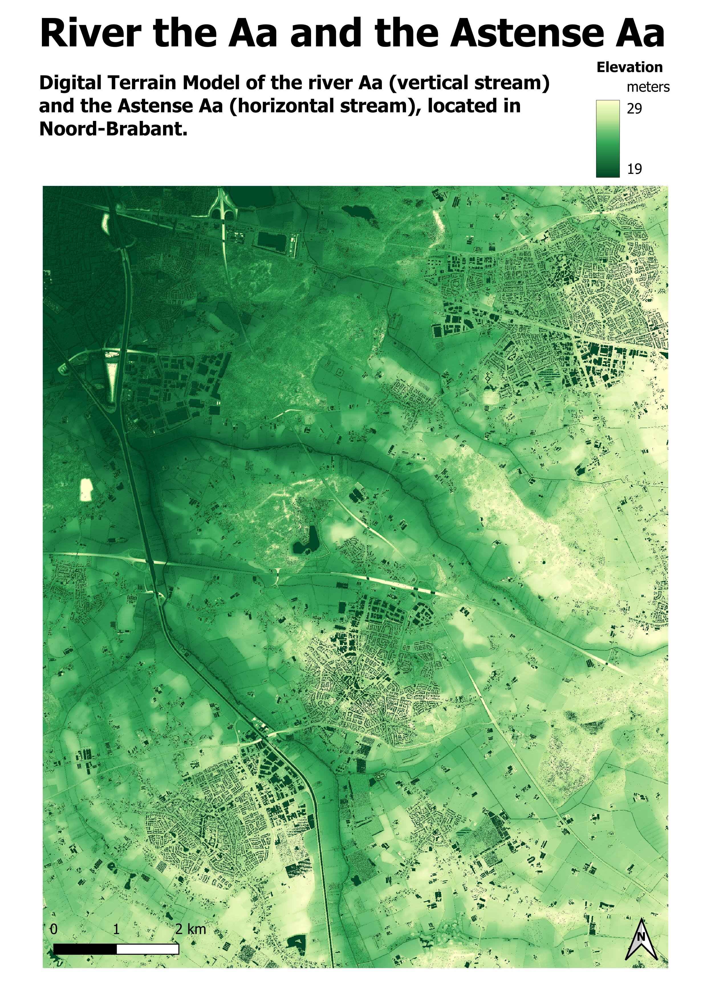

Digital Elevation Models
Digital Terrain Model of Aa and Astense Aa
Digital Elevation Models encompasses Digital Terrain Models and Digital Surface Models. Digital Terrain Maps (DTM) include only data on the ground level of the surface, without any objects like trees or buildings. A Digital Surface Maps (DSM) show all elements present on the surface.
Below is a DTM of the region around the river the Aa (the vertical stream) and its subriver the Astense Aa (horizontal stream), located in the east of Brabant, a province in the south of the Netherlands. Originally, the river had a winding shape. At the end of the 19th century, Waterschap De Aa decided to reshape the Aa and remove its curves to improve water level control. Recently, organizations have made an effort to restore the natural shape of the river.
Methods and Observations
Data from LiDAR, a method that uses laser pulses to determine distances, was used from Geotiles for 2024. This data was uploaded in QGIS and the separate DTM tiles were merged into one file. I styled the map and adjusted minimum and maximum elevation values to increase contrast, allowing for better visualization of differences in elevation. I chose a green color graduation to reflect the fact that the region of interest is rich in forest. The elevation is relative to the Normaal Amsterdams Peil (NAP).
The river can be identified by the lower elevation (darker green), especially where the Aa and Astense Aa join further downstream in the northwest. The map shows that there is only minor elevation difference between upstream and downstream, not more than 5 meters.